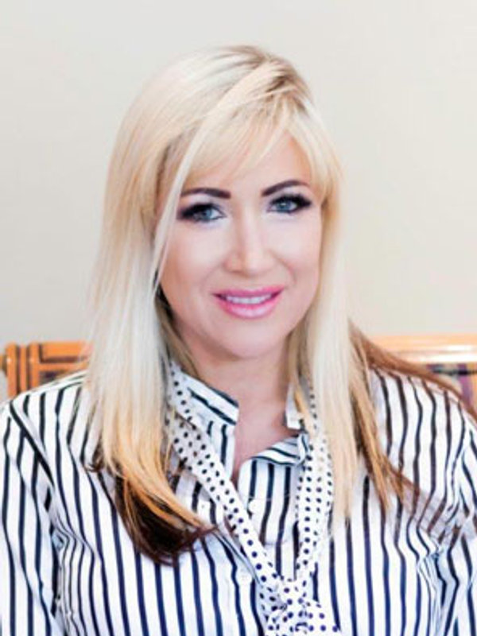
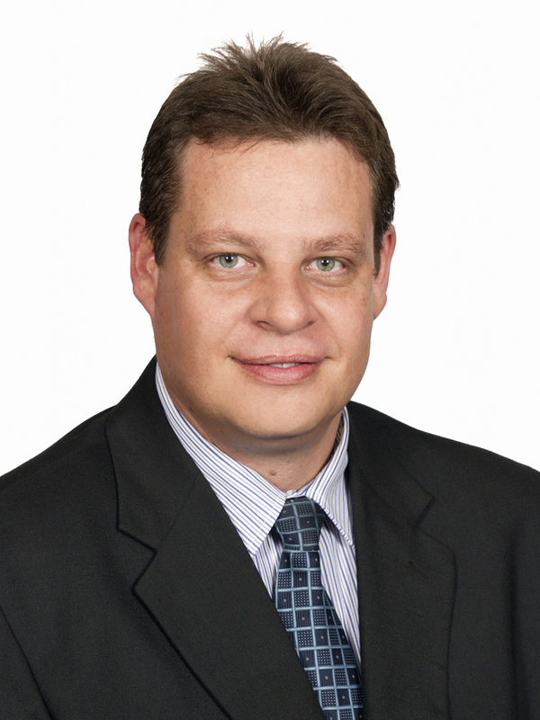
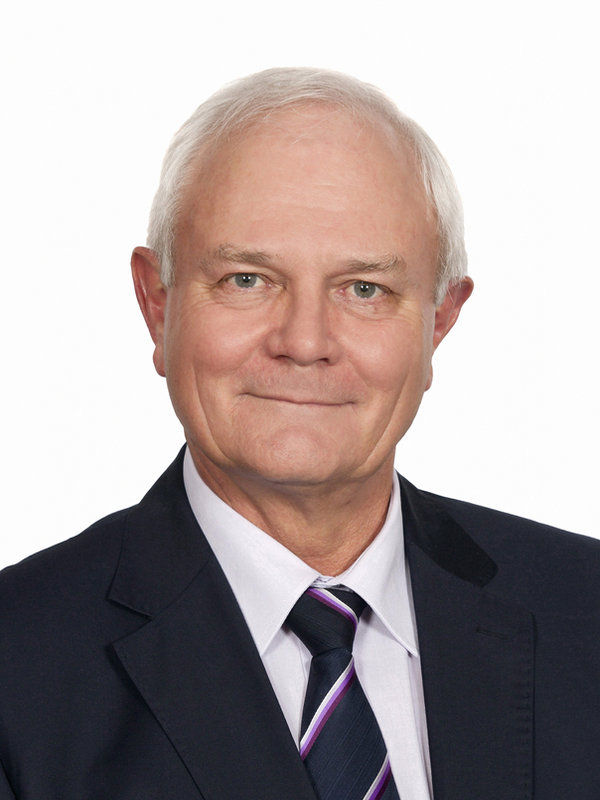
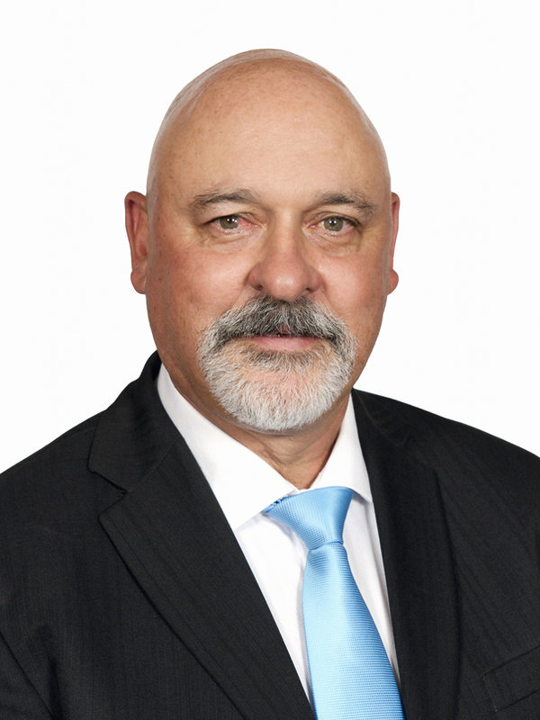

Our people
A proud legal team whose reputation and integrity are known and respected throughout South Africa.
B. Comm LLB (UP)
Wildlife and birding
ml@fhsn.co.za →
B. Proc (UNISA)
Gym and art
millie@fhsn.co.za →
LLB (UP)
Wildlife, offshore angling, photography and outdoor activities
rgrobler@fhsn.co.za →LLB (UP)
Wildlife and photography
yc@fhsn.co.za →National Diploma in Tourism Management; Bachelor of Laws (UNISA)
Automotive enthusiast; cooking and baking; travel, history and anthropology
thapedi@fhsn.co.za →B.Proc (UNISA)
Cycling and theatre
ronel@fhsn.co.za →BCom Law; Bachelor of Laws (UP) (Cum Laude)
Gym, travel and art
nadia@fhsn.co.za →Bachelor of Laws (UFS)
Rugby and Formula 1; hiking and travelling; reading
etienne@fhsn.co.za →
B. Comm LLB; LLM (Commercial Law) (UP)
Golf
cgs@fhsn.co.za →
B. Proc (RAU, now UJ); LLB (UP)
Golf
painter@fhsn.co.za →